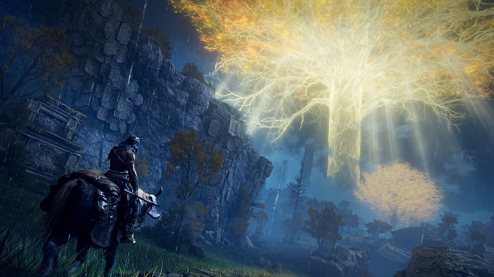
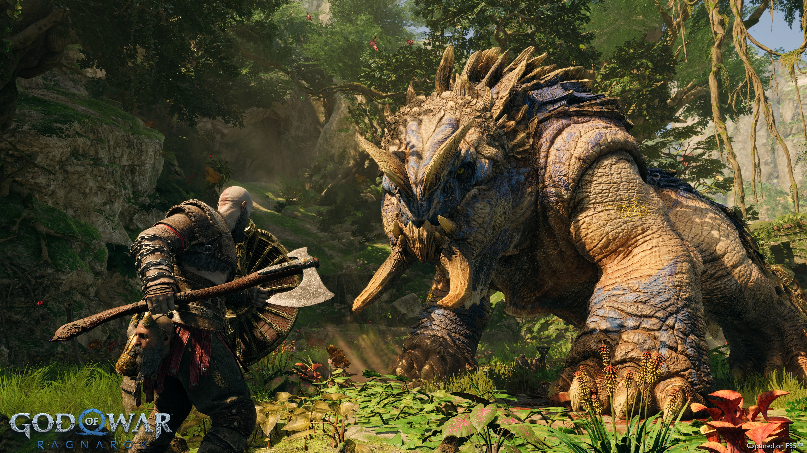
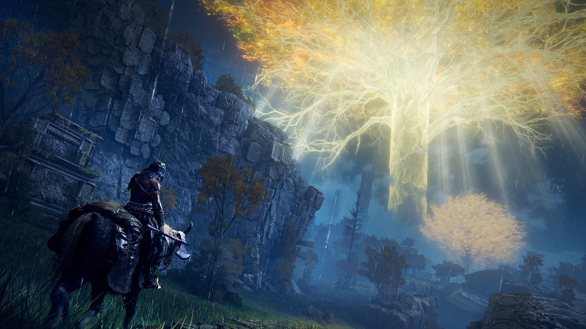
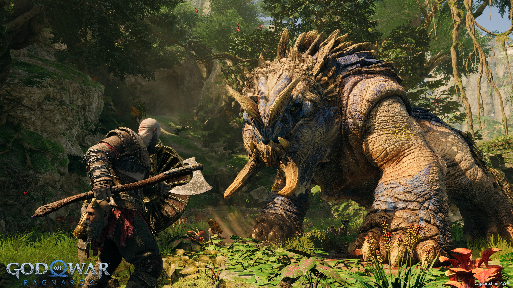

Elden Ring
Elden Ring is an action role-playing game played in a third person perspective, with gameplay focusing on combat and exploration. It features elements similar to those found in other games developed by FromSoftware, such as the Dark Souls series, Bloodborne, and Sekiro: Shadows Die Twice.
- Action
- Souls-actig
- Relaxing
- Rating: 97
- Singleplayer/Multiplayer: Yes
- Online PvP: Yes
- Genre: PEGI 18
- Creator: FromSoftware
- Releasedate: 25/02/2022
 



Systeemeisen
- OS: Windows 10
- Prossesor: Intel Core i5-8400 | AMD Ryzen 3 3300X
- Ram: 16 GB
- Graphics Card: Nvidia GeForce GTX 1070, 8GB | AMD Radeon RX Vega 56, 8GB
- Direct X: Version 12
- Storage: 60 GB
Recenties
Elden Ring is in every way a better version of the 'Soulsborne' games that FromSoftware has been making for years. The similarities with a game like Dark Souls are obvious: the way of fighting, the game world shrouded in mystery, the way of building a character and the way of finding checkpoints in the environment are all the same. Elden Ring adds a lot to it though. With those additions, it ensures, among other things, that this is a more fun, accessible game. Players can get help in all kinds of ways and the game makes more of an effort to properly explain the operation of important systems. That makes a game that is still challenging in itself a lot more manageable. The gameplay also works wonderfully, as we are used to from FromSoftware. The game world is versatile, very large and occasionally offers beautiful and sometimes less beautiful pictures, but that should certainly not spoil the fun. As always, the battles with (intermediate) bosses steal the show. Each boss offers a new learning process and the longer that process takes, the greater the satisfaction of vanquishing the enemy. Even in this more accessible way, it is still a game where skill is important, so Elden Ring is just not suitable for all gamers. Still, it should be clear that many more people can start this with confidence than Sekiro: Shadows die Twice, Dark Souls or the other FromSoftware games. That's a good thing, because Elden Ring is by far one of the best games of this year.